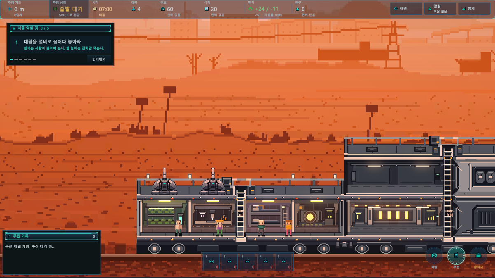

방주 열차 기획 위키
기계 생물이 지배한 황무지에서, 생존자들을 돌보고 열차를 증축하며 살아남는 생존 경영 게임.
게임의 방향과 규칙은 통합 기획서에서, 사건별 발동 조건과 선택 결과는 사건 카드 위키에서 확인하세요.

게임 속 모습




기계 생물이 지배한 황무지에서, 생존자들을 돌보고 열차를 증축하며 살아남는 생존 경영 게임.
게임의 방향과 규칙은 통합 기획서에서, 사건별 발동 조건과 선택 결과는 사건 카드 위키에서 확인하세요.
